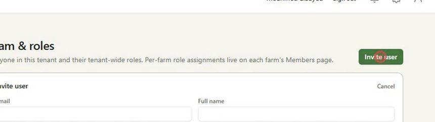
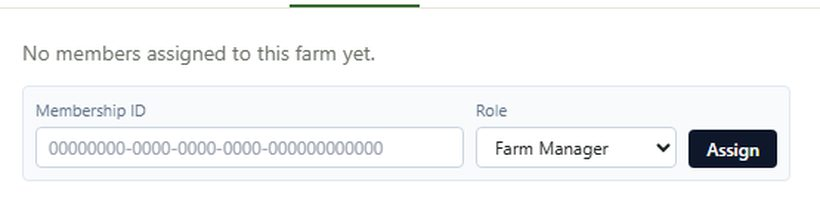

Guide · Process 01
Attach the people
Two steps, on two screens. A person joins the account once and gets a tenant-wide role. Then they get a role on each farm they work on. Work opened by a decision tree goes to whoever holds the farm.
Two steps, on two screens. A person joins the account once and gets a tenant-wide role. Then they get a role on each farm they work on. Work opened by a decision tree goes to whoever holds the farm.
Tenant admin
10 minutes for a small team
4 steps
Step by step

The tenant role is what they can do across the account. It is not the same as what they can do on one farm. That comes next.

The Members tab asks for a membership ID, a long identifier, and the Team page does not show one. Until that box becomes a name picker, ask whoever operates the platform for the id, or read it from the account's user list through the API, where it is returned as membership_id.
Reference
| Field | Where | What it is for |
|---|---|---|
| Invite user | Where the welcome message goes, and the sign-in name. | |
| Full name | Invite user | Shown throughout the app, so spell it the way they spell it. |
| Phone | Invite user | Optional here. Required later for anyone who uses the Scout app. |
| Tenant role | Invite user | What they can do across the whole account. |
| Membership ID | Farm settings, Members | Identifies the person inside this account. Returned as membership_id by the users API. |
| Role | Farm settings, Members | Farm Manager, Agronomist, Field Operator, Scout or Viewer, on this farm only. |
| What you see | What it means |
|---|---|
| No users in this tenant yet | Nobody has been invited. Start with Invite user. |
| No welcome email arrived | Mail was unavailable, so the screen showed a temporary password instead. Hand it over directly. It can be reissued with Resend invite. |
| The person signs in but sees no farms | They have an account role but no farm role. Assign them on the farm's Members tab. |
| The Assign button does nothing useful | The membership ID is wrong. It is a long identifier, not an email address. |
| A field worker shows as a phone number | Their sign-in is a phone, not an email. Fill in the full name so the app has something to show. |
Support
Three channels beside the documentation. All three pages are placeholders for now and will be designed next.